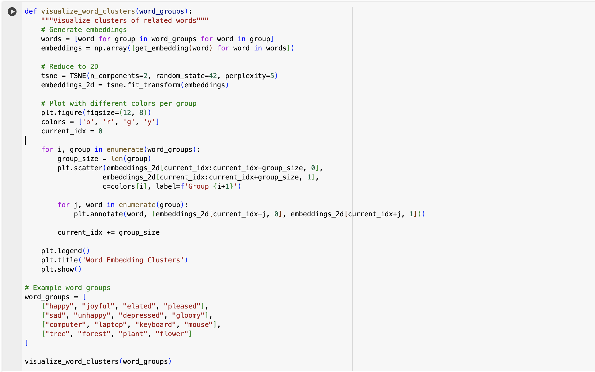
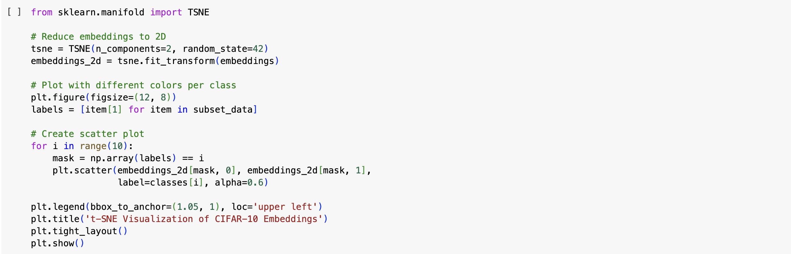

I learned about embeddings and how we can find similarities between words and images so I am writing this in my blog. This is part 1 and part 2 will be looking into Semantic Search and implementation of K-NN
Understanding Embeddings
What Are Embeddings?
Embeddings are a way to represent words, sentences, or even entire documents as lists of numbers (vectors). These numbers capture important patterns and relationships between different words or concepts. The idea is that similar words will have similar number patterns, allowing a computer to understand their meanings in a way that’s useful for tasks like search, recommendation systems, and machine learning.
Why Do We Use Embeddings?
Computers don’t understand words the way humans do—they work with numbers. If we simply assigned each word a unique number (like “apple” = 1, “banana” = 2), the computer wouldn’t know that “apple” and “banana” are more related to each other than “apple” and “airplane.” Embeddings solve this problem by placing words in a mathematical space where related words have similar vector values.
For example, in a good word embedding system:
- The word “king” might have a vector close to “queen” but farther from “dog.”
- The words “cat” and “kitten” will have similar vector patterns, but “cat” and “car” will not.
This is useful because it allows AI models to make sense of language, find relationships between words, and improve tasks like translating languages, recommending movies, or even detecting spam emails.
Key Benefits:
- Semantic Understanding: Captures relationships between concepts
- Numerical Representation: Converts text into machine-readable format
- Similarity Comparison: Enables efficient search and matching
- Dimensionality Reduction: Compresses complex information
Real-World Applications:
- Semantic search engines
- Recommendation systems
- Document classification
- Language translation
üéØ Generating Embeddings
ü߆ What Are Embeddings?
Embeddings convert words or entire articles into numeric representations (vectors) so that a computer can analyze their meaning and compare them.
üåü Why Use Embeddings?
- They help computers understand text similarities.
- They allow semantic search, where similar articles can be grouped together.
- They power recommendation systems and search engines.
üõ† Embedding Function
This function: 1. Takes a text input 2. Trims it to 8000 characters (API limit) 3. Calls OpenAI’s embedding model 4. Returns a numerical representation of the text
üîÆ Visualizing Word Embeddings
Words exist in a high-dimensional space (1536D). To see relationships, we need to reduce the dimensions to 2D using t-SNE.
üé® What This Function Does
- Takes lists of words
- Gets their embeddings
- Uses t-SNE to reduce them to 2D
- Plots them using
matplotlib
üîé Comparing Word Similarities
Now that we can generate embeddings, let’s compare words based on their similarity using cosine similarity.
üß© How Does It Work?
- Computes a dot product between two normalized embeddings.
- Returns a similarity score from -1 (opposite) to 1 (identical).
- Example: “happy” should be closer to “joyful” than “sad.”
Category-Based Image Search
Try finding similar images for different categories and analyze the results:
- Find similar images for vehicles (cars, trucks, airplanes)
- Find similar images for animals (cats, dogs, birds)
- Compare how well the model distinguishes between similar categories
- Look at the similarity scores - what patterns do you notice?

Image Embeddings: A Visual Perspective
Just like how we converted words into numerical vectors, we can do the same with images! Let’s explore how image embeddings work using the CIFAR-10 dataset. This dataset is a common dataset used to train and test image classification models.
About CIFAR-10
CIFAR-10 consists of 60,000 32x32 RGB images in 10 classes: - airplane - automobile - bird - cat - deer - dog - frog - horse - ship - truck
We’ll use: 1. ResNet18 to generate embeddings 2. FAISS for efficient similarity search 3. t-SNE for visualization
Aside:
ResNet18 is a convolutional neural network architecture with 18 layers, pre-trained on ImageNet. We’re using it as a feature extractor by removing the final classification layer and using the penultimate layer’s output as our image embeddings. These embeddings capture high-level visual features that are useful for similarity comparison between images. By using a pre-trained model, we can leverage the knowledge it has learned from ImageNet to generate meaningful representations of our CIFAR-10 images, even though they are from a different domain.
FAISS (Facebook AI Similarity Search) is a library for efficient similarity search of high-dimensional vectors. We’re using it here to quickly find the most similar images in our dataset by comparing their ResNet18 embeddings. FAISS is optimized for handling high-dimensional vectors by an indexing mechanism.
t-SNE (t-distributed stochastic neighbor embedding) is a method for visualizing high-dimensional data by giving each datapoint a location in a two or three-dimensional map. It tries to preserve the pairwise similarities between data points in a lower-dimensional space, allowing us to interpret or understand higher-dimensional data more easily.

Aside: Why does the query not return good results?
The query returns good results for some classes but not others because the quality of the similarity search depends on the quality of the embeddings. In this assignment, we use embeddings from ResNet-18’s penultimate layer. ResNet-18 is trained for ImageNet classification and may capture general visual features well, but it might miss the fine-grained details necessary for distinguishing certain classes in CIFAR-10. In other words, ResNet-18’s features are not always optimized for measuring similarity.
We chose ResNet-18 for this assignment because it is one of the smaller and simpler models that works decently well. However, there are more advanced models designed specifically to learn semantically rich representations. Models such as CLIP, SimCLR, or MoCo—which use contrastive learning objectives—tend to produce embeddings that better capture subtle differences between classes. Additionally, fine-tuning a model on your dataset can further improve performance.